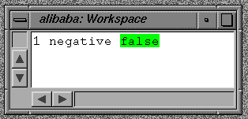

To a hammer, everything looks like a nail.
Before describing the language and how you can create your own programs, we should explain a few basics - both to give you some background and to define the technical terms used in the documentation (and literature).
Keep in mind that this text is only a short introduction - we recommend reading of a standard textbook on the language for more detailed information on the language (-> 'literature').
In contrast to hybrid systems like C++ or Java,
"everything" means really "everything" in Smalltalk.
This includes integers, characters, arrays, classes
and even a program's stackframes, which hold the local variables
during execution.
In Smalltalk, there are no such things as "builtin" types or classes,
which have to be treated different, or which do not behave exactly like
other objects with respect to message sending, inheritance or debuggability.
For example, in Smalltalk, classes like integer, character, string or classes
themself can be given new or modified methods -
even at runtime, by dynamically loading new code.
We will therefore use the term "message" or "message send" for the act of asking for an operation by name, and, as we will see later, the term method for the actual code which will eventually perform the operation.
To the outside world, any internals of an object are hidden - all interaction happens only via messages. The set of messages an object understands is called its message protocol, or protocol for short.
+, -, * ... messages.
asUppercase, asLowercase ... messages.
Therefore, theoretically, an object may add the "+" message to its protocol and perform an operation which has nothing to do with the mathematical concept of adding numbers.
In practice, this is never done in Smalltalk, since it makes programs less understandable. For example, the Java operator to concatenate strings is "+", whereas in Smalltalk it is "," - and this was done by purpose to make the code easier to understand.
However, it is useful to keep in mind that only the message's receiver is responsible for the outcome, and in theory, any operator or message selector can be redefined by any object. (As we will see, this is also the reason for the uncommon precedence rules in binary operations.)
On the other hand, it makes the system very flexible.
For example, it is very easy to extend the numeric class hierarchy with additional
things like Complex numbers, Matrices, Functional Objects etc.
All that is required for those new objects to be handled correctly is
that they respond to some basic mathematical protocol for arithmetic,
comparison etc.
Existing mathematical code is usually not affected by such extensions,
which makes Smalltalk one of the best environments for code reuse and sharing.
Classes may have zero, one or many instances.
You may wonder how a class without instances could be
useful - this will become clear when inheritance and abstract
classes are described further down in this document.
1, 99 and -8 are instances of the Integer class
1.0 and 3.14159 are instances of the Float class
'hello', 'foo' are instances of the String class
Button class
nil is the one and only instance of the UndefinedObject class
Every class keeps a table (called "MethodDictionary") which
associates the name of the message (the so called message selector) to a method.
When a message is sent to an object, the classes method table
is searched for a corresponding entry and - if found - the associated
method is invoked (more details below ...).
Since Smalltalk is a pure object oriented language,
this table is also an object and accessible at execution time;
it may even be modified during execution
and allows objects to learn about new messages dynamically.
Of course, the interactive programming environment heavily depends on this;
for example, the browser is a tool which adds new items to this table when
a method's new or changed code is to be installed.
A class inherits all protocol as defined by its superclass(es) and may optionally redefine individual methods or provide additional protocol.
Therefore, a message send performs the following actions (***):
#doesNotUnderstand:) to
the receiver with the message object as argument.
Object, there is no need to.
Actually, it may occasionally make sense for a class
to inherit from no class at all (i.e. to have no superclass).
The effect is that instances of such classes do not inherit ANY protocol
and will therefore trigger an error for all received messages.
All instances of a class provide the same message protocol,
but typically contain different internal state.
It is actually the class, which
provides the definition of the protocol and amount of internal
state of its instances.
String class
and respond to the same set of messages. But the internal state of the first
string consists of the characters "h" and "i", whereas the second contains
the characters "w", "o", "r", "l", "d".
An object's instance variables are only accessible via protocol,
which is provided by the object - there is no way to access an object's
internals except by sending messages to it.
This is true for every object - even for the strings in the example above.
There is no need for the sender of a message to actually know the class of
the receiver - as long as it responds to the message and performs the
appropriate action.
'at:' message. You could write
an ExternalString class, which fetches characters from a file
and returns them from this message.
The sender of the 'at:' message would not be affected at all by this
(except for a possible performance degration ;-).
#basicSize, #identityHash etc.).
Thus, when we send a message to some `normal' object, the corresponding class
object provides the behavior - when some message is sent to a class object,
the corresponding metaclass provides the behavior.
Technically, messages to classes are treated exactly the same way as
messages to non-class objects: take the receiver's class, lookup the method in its
method table, execute the method's code.
Since different metaclasses may provide different protocol for their class
instances, it is possible to add or redefine class messages just like any other
message.
As a concrete example, take instance creation which is done in Smalltalk
by sending a "new"-message to a class.
In Smalltalk, there is no such thing as a built-in "new" (or any other built-in)
instance creation message
- the behavior of those instance creation (class) messages is defined exclusively by metaclass protocol.
Therefore, it is possible (and often done) to redefine the "new" method for special handling;
for example singletons (classes which have only a single unique instance), caching and pooling
(the "new" message returns an existing instance from a cache), tracing and many more are easily
implemented by redefining class protocol.
Object-Class,
which provides a rich protocol useful for all kinds of objects
(comparing, dependency mechanism, reflection etc.).
As we will see shortly, Smalltalk programs only consist of messages being sent to objects.
Since even control structures
(i.e. conditional evaluation, loops etc.)
are conceptionally implemented as messages,
a common syntax is used in your programs both for
the programs flow control and for manipulating objects.
Once you know how to send messages to an object,
you also know how to write and use fancy control structures.
Smalltalk's power (and difficulty to learn) does not lie in the language itself, but instead in the huge protocol provided by the class libraries.
Let's start with languages building blocks...
:="
"some comment"
"this
is
a
multiline comment"
"
another multiline comment
"
"/ this is an end-of-line comment
"<< END
some comment line
more lines
a line with "another comment"
and followed by
"/ an end of line comment
plus more stuff here
END
#new
-message sent to a class or the #copy-message sent to an instance.
The following literal constant types are allowed:
Integer constants (possibly negative):
6,
-1,
12345678901234567890
with a radix (number base):
8r0777,
16r80000000000,
16rAFFE, -16r1000 and 16r-1000,
16r123456789abcdef0123456789abcdef,
2r0111000
There is no limit on the integer constant's value; eg.
1234567890123456789012345678901234567890 is a valid integer literal
(and NOT truncated, overflowing or leading to an error).
Fraction) constants:
1/3,
-1/3,
Fractions consist of an integer numerator and integer denominator. Both being integer literals (i.e. unlimited in size).
Float) constants:
1.234,
1e10,
1.5e15
Float constants with radix (i.e. "16r10.1" or "2r10.1") are allowed,
but should not be used in practice.
(because the 'e'-exponential character is a valid numeric character in hex;
and therefore, float constants with a radix-base greater than 14 cannot have an exponent).
The name "Float" is a historic leftover - internally the IEEE double precision floating point representation is used (independent of the exponent character).
For compatibility with other Smalltalk systems, the "d"-character is also recognized
as an exponential character. I.e. 1d10 has the same value as 1e10.
1.234s4,
10s4,
FixedPoint constants are rational numbers which print themself as a scaled decimal number with the given number of post-decimal-point digits. Thus "1.234s4" prints as "1.2340" and "10s4" as "10.0000". Scaled Decimals are mostly used for monetary values and to format tabular data in a nice way.
Because scaled decimals are not supported by all Smalltalk systems, the compiler can be configured to treat them as errors via the settings dialog. If you want to ensure that your program is portable, disable them.
Boolean constants:
true, false
UndefinedObject constant:
nil
Character constants from the 8-bit iso8859-1 character set:
$c
ST/X also allows unicode character constants with a codepoint above 16rFF,
of up to 30 bit (i.e. up to 16r3FFFFFFF).
Therefore, $≠ is also a valid character constant in ST/X
and represents a character with a codePoint of 16r2260 (8800).
Be aware, that not all Smalltalk dialects support unicode. Most noteworthy is VisualAge Smalltalk, which does not. However, most modern Smalltalks do (Squeak, Visualworks and GNU-Smalltalk). So your program may be less portable if you use them. If portability against such old Smalltalk versions is an issue, we recommend at least extracting unicode specific code into easy maintainable extra methods.
String constants:
'foo' or
'a long string constant'
String constants may spawn multiple lines.
There are no special escapes or other mechanisms to represent unprintable characters
(such as cr, tab or backspace) in a string. This is certainly a major missing feature and
something that ought to be added in a future Smalltalk standard.
(ST/X provides a message named "withoutCEscapes", which allows for the traditional C-language
escape mechanism (i.e. 'foo\nbar\tbaz' withoutCEscapes),
but that is a little bit ugly to use.)
ST/X also allows unicode string constants where individual characters may have a codepoint of up to 30 bit (i.e. up to 16r3FFFFFFF). However, the above mentioned character portability issues apply.
Symbol constants:
#'bar',
#'++' or
#'foo bar baz'
#foo - see below
Symbols are unique immutable strings - that is, the system arranges that for a given sequence of characters, at most one corresponding symbol object exists. (Lispers call them Atoms)
Symbols can be used much like readonly Strings, with the big advantage that they can be compared using identity compare (== / ~~) whereas Strings usually have to be compared using equality (i.e. contents-) compare operators (= / ~=).
If the symbol's characters are all alphanumeric or all from the set of binary special
characters (+, -, *, and a few others), the quotes can be omitted and
the short form #bar can be used instead of #'bar'.
Until you've learned the exact details, always place those quotes around, to be sure.
Symbols are limited to the Latin-1 character set, and we do not intend to change this. The reason is that we do not want class names and method names to be written in non-English (it is hard enough, if some programmers do not follow that rule and write their stuff in different east-european languages...). Sorry to non-western natives; but as you are currently reading this, you obviously understand English better than and prefer it to German. And that a Chinese programmer will probably have more trouble reading (say) Hindu than English ;-) So this is one way to enforce at least a western language (the compiler is not smart enough to detect and complain about non-english).
More information on symbols is found in
"collection classes".
Array constants:
#(1 2 $b 'hello' 3.14159)
The elements of an array constant, must be literal constants, and can be any of the literals described in this section.
Elements can themself be array literals - i.e. it can be a nested array literal, as in:
#(1 #two #(3 4) #( #(5 6) 7) ).
For simple symbol constants (identifiers) and nested arrays,
the leading '#' may be ommitted
within an array constant if it is not one of 'true', 'false' or 'nil'
(however, we do not recommend doing so).
Also, array constants within an array constant are allowed to be written without
the leading '#'-character. Therefore, the above array constant can also
be written as:
#(1 two (3 4) ( (5 6) 7) )
ByteArray constants:
#[0 1 2 3 4]
The elements must be integer constants in the range 0..255. ByteArrays can be seen as more memory friendly, compact version of Arrays, and are often used when bulk data (bitmap images) is processed.
Identifiers must start with a letter or an underscore character.
The remaining characters may be letters, digits or the underline character (*).
Examples:
foo
foo123
foo_123
aVeryLongIdentifier
anIdentifier_with_underline_characters
For portability with some (VMS-)VisualWorks Smalltalk variants, a dollar character ($) can also be allowed inside an identifier as a compiler option (the $ was used in the VMS Smalltalk version of ST/X).
nil
true and false
self
super
thisContext
here
Since "here" is a Smalltalk/X language extension, its builtin-ness is less strict than that of the other special variables: if a variable named "here" is defined and visible in the current variable scope, here will refer to that variable; otherwise, it refers to the receiver (with different lookup semantics).
1 negative
"negative" to the number 1, which is the receiver of the
message.
Unary messages, like all other messages, return a result,
which is simply another object.
In the above case, the answer from the "negative" message is the
boolean false object.
Evaluate this in a workspace (using printIt); try different receivers (especially: try a negative number).

Unary messages parse left to right, so, for example:
1 negative not
negative"-message to the number 1.
Then, the "not"-message is sent to the returned value.
The response of this second message is returned as the final value.
If you evaluate this in a workspace,
the returned value will be the boolean true.
Try a few unary messages/expressions in a workspace:
1 negated
-1 negated
false not
false not not
-1 abs
1 abs
10 factorial
10 factorial sqrt
5 sqrt
1 isNumber
$a isNumber
$a isNumber not
1 isCharacter
$a isCharacter
'someString' first
'hello world' size
'hello world' asUppercase
'hello world' copy
'hello world' copy sort
#( 17 99 1 57 13) copy sort
1 class name
1 class name asUppercase
WorkspaceApplication open
Notice, that in the above examples, you already encountered polymorphy: both strings and
arrays respond to the sort message and sort their contents in place.
Also notice, that classes also respond to messages, just like any other object.
The last example sends the "open"-message to the WorkspaceApplication class.
5 between:3 and:8
between:" and "and:" are the keywords,
the numbers 3 and 8 are the arguments and the number 5 is the receiver of the message.
The message's actual selector (i.e. the message name) is formed by the concatenation of all individual
keywords; in the above example, the message selector is "between:and:".
As a beginner, keep in mind that
this is different to both a "between:" and an "and:"-message.
And of course, also "between:and:" and "and:between:"
are different messages.
In the browser, the method will be listed under the name: "between:and:".
Keyword messages parse left to right,
but if another keyword follows a keyword message, the expression is parsed as
a single message (taking the keywords concatenation as selector).
Thus, the expression:
a max: 5 min: 3
max:min:"-message to the object referred to by the variable
"a".
This is not the same as:
(a max: 5) min: 3
max:"-message to "a",
then sends the "min:"-message to the result.
Try these in a
workspace
(don't fear the error...)
To avoid ambiguity you must place parentheses around.
Try a few keyword messages/expressions in a workspace (also see what happens, if you ommit
or change the parenthesis):
1 max: 2
1 min: 2
(2 max: 3) between: 1 and: 3
(1 max: 2) raisedTo: (2 min: 3)
'Hello' at: 1
#(100 200 300) at: 2
#(10 20 30 40 50 60) indexOf: 30
#(10 20 30 40 50 60) at:('Hello' indexOf: $e)
Unary messages have higher precedence than keyword messages,
thus:
9 max: 16 sqrt
(because it is evaluated as: "9 max: (16 sqrt)" which is "9 max:4".
It is not "(9 max: 16) sqrt", which is "16 sqrt" and would give 4 as answer.)
Binary messages are typically used for arithmetic operations - although, this is not enforced by the system. No semantic meaning is known or implied by the Smalltalk compiler, and binary messages could be defined and used for any class and any operation.
A typical example of a binary message is the one which implements arithmetic addition
for numeric receivers (it is implemented in the Number classes):
1 + 5
Binary messages
parse left to right (like unary messages).
Therefore,
2 + 5 * 3
(because of left-to-right evaluation,
first '+' is sent to 2, with 5 as argument.
This first message returns 7.
Then, '*' is sent to 7, with 3 as argument, resulting in 21 being answered.)
To change the execution order or to avoid ambiguity you should place parentheses around:
2 + (5 * 3)
Unary messages have higher precedence than binary messages, thus
9 + 16 sqrt
On the other hand, binary messages have higher precedence than
keyword messages, thus
9 + 16 max: 3 + 4
It is not the same as "9 + (16 max: 3) + 4" (which results in 29) or
"((9 + 16) max: 3) + 4" (which in this case also results in 29)
Again, we highly recommend the use of parentheses - even when the default evaluation order matches the desired order; it makes your code much more readable, and helps beginners a lot.
To practice, try a few binary messages/expressions in a workspace:
1 + 2
1 + 2 * 3
(1 + 2) * 3
1 + (2 * 3)
-1 * 2 abs
(-1 * 2) abs
5 between:1 + 2 and:64 sqrt
5 between:(1 + 2) and:(64 sqrt)
#(100 200 300) at: (1+1)
The second example above shows why parentheses are so useful:
from reading the code, it is not apparent, if the evaluation
order was intended or is wrong.
You will be happy to see parentheses when you have to debug
or fix a program which contains a lot of numeric computations.
Here are a few more "difficult" examples:
1 negated min: 2 negated
1 + 2 min: 2 + 3 negated
, (comma)
,"-message is understood by collections,
and mostly used for strings (which are collections of characters).
As a binary message, it expects a single argument
and returns the concatenation of the receiver and argument
(i.e. a collection which contains the receiver's elements
and those of the argument).
'Hello','World' "
returns the new string: 'HelloWorld'.
#(10 20 30),#(50 60 70) "
@
@"-message is understood by numbers. As a binary message, it expects
a single argument. It returns a Point-object (coordinate in 2D space) with the receiver
as x, and the argument as y value.
10 @ 20"
returns the same as
"(Point new x:10 y:20)".
->
->"-message is similar to the above "@" in that it is a shorthand instance creation message.
It is understood by any object and returns an association (a pair) object.
10 -> 20"
returns the same as
"(Association new key:10 value:20)".
?
?"-message returns the receiver if it is non-nil, and the argument otherwise.
It is used to deal with possibly uninitialized variables
in assignments or as message argument.
a ? 20"
returns the same as
"(a notNil ifTrue:[a] ifFalse:[20])".
In ST/X, the actual set of allowed characters can be queried from the system
by evaluating (and printing) the expression
"Scanner binarySelectorCharacters".
If you compare your favorite programming language
against regular English,
you will find Smalltalk to be much more similar to plain English
than most other programming languages.
For example, consider the order to a person called "tom",
to send an email message to a person called "jane":
(assuming that tom, jane, theEmail refer to objects)
| English | Smalltalk | Java / C++ |
|---|---|---|
| tom, send an email to jane. | tom sendEmailTo: jane. | tom.sendEmail(jane);
tom->sendEmail(jane); |
| tom, send theEmail to jane. | tom send: theEmail to: jane. | tom.sendEmail(theEmail, jane);
tom->sendEmail(theEmail, jane); |
| tom, send theEmail to jane with subject: 'hi'. | tom send: theEmail to: jane withSubject: 'hi'. | tom.sendEmail(theEmail, jane, "hi");
tom->sendEmail(theEmail, jane, "hi"); |
album play.
album playTrack: 1.
album repeatTracksFrom: 1 to: 10.
Another plus in Smalltalk is that the meaning of an argument is described by the keyword before it. Whereas in Java or C++ you have to look at a function's definition to get information on the order and type of argument, unless you use fancy function names like "sendEmail_to_withSubject()" which actually mimics the Smalltalk way.
Smalltalk was originally designed to be easily readable by both programmers AND non-programmers. Humor says, that this is one reason why some programmers do not like Smalltalk syntax: they fear to loose their "guru" aura if others understand their code ;-) .
1 negated
"negated" to the number 1, which gives
us a -1 (minus one) as result.
1 negated abs
"negated" to the number 1, which gives
us an intermediate result of -1 (minus one);
then, the message "abs" is sent to it, giving us
a final result of 1 (positive one).
-1 abs negated
"abs" to the number -1 (minus one), which gives
us a 1 (positive one) as intermediate result. Then this object
gets a "negated" message.
1 + 2
"+" to the number 1, passing it
the number 2 as argument. The returned object is 3.
"+" message.
1 + 2 + 3
"+" is sent to the number 1, passing it
the number 2 as argument. Then, another "+" message is sent to
the intermediate result, passing the integer-object 3 as argument.
1 + 2 * 3
-1 abs + 2
"abs" to the number -1 (minus one), then sends "+"
to the result, passing 2 as argument.
1 + -2 abs
"abs" to the number -2, then sends "+"
to the number 1, passing the result of the first message as argument.
-1 abs + -2 abs
"abs" to the number -1 (minus one) and remembers the result.
Then sends "abs" to the number -2 and passes this as argument
of the "+" message to the remembered object.
1 + 2 sqrt
"sqrt" to the number 2, then passes this as argument
of the "+" message to the number 1.
(1 + 2) sqrt
"+" to the number 1, passing 2 as argument.
Then sends "sqrt" to the result.
1 min: 2
"min:" (minimum)
message to the number 1, passing 2 as argument.
(1 max: 2) max: 3
"max:" (maximum)
message to the number 1, passing 2 as argument. Then sends "max:"
to the returned value, passing 3 as argument.
(1 + 2 max: 3 + 4) min: 5 + 6
"+" to the number 1 passing 2
as argument and remembers the result.
Then, "+" is sent to the
number 3, passing 4 as argument.
Then, "max:" is sent to the remembered first result,
passing the second result as argument. The result is again
remembered.
Then, "+" is sent to the number 5, passing
6 as argument.
Finally, the "min:" message is sent to the
remembered result from the first max: message, passing
the result from the "+" message.
1 max: 2 max: 3
"max:max:"
message to the number 1, passing the two arguments, 2 and 3.
"max:max:" message,
this leads to an error (message-not-understood).
This example illustrates why parentheses are highly recommended - especially with concatenated keyword messages.
'hello' at:1
"at:"
message to the string constant.
'hello' , ' world'
","
binary message to the first string constant, passing another string as argument.
'hello' , ' ' , 'world'
","
binary message to the first string constant, passing ' ' as argument.
Then, the result gets another "," message, passing 'world' as
argument.
#(10 2 15 99 123) min
"min"
unary message to an array object (in this case: a constant array literal).
All collections respond to the "min" message by searching for its smallest
element and returning it.
WorkspaceApplication new open
new"
unary message to the WorkspaceApplication class object, which returns a new instance of itself.
Then, this new instance gets the "open" message, which asks for a window
to be shown.
-1 negated.
1 + 2.
negated" message to -1 (minus one), ignoring the result.
Then, the "+" message is sent to 1 (positive one), passing the number 2 as argument.
Notice that there is actually no need for a period after the last statement
(it is a statement-separator) - it does not hurt, though.
We will encounter more (useful) examples for multiple statements below.
nil, when created.
Important Note to C, C++ and C# programmers:
Smalltalk variables always hold a reference (pointer) to some object. Every object "knows" its type. Its NOT the pointer, which knows the type of the object it points to. In Smalltalk it is totally impossible to treat a pointer to an integer like a pointer to something else. There is no such thing like a cast in Smalltalk. Therefore we say, that Smalltalk is a "dynamically strongly typed language". In contrast to C++, which is a "statically weakly typed language".In Smalltalk, all objects are always and only created conceptionally on the dynamic garbage collected heap storage. There is no such thing as "boxing" or "unboxing". Assignments never copy the value, but instead the reference to the object. When arguments are passed in a message, references are passed.
For now, only global variables and local variables are described (because we need them for more interesting examples); the other variable types will be described later.
Beside classes, only a few other objects are bound to globals; the most interesting for now are:
Transcript
show:something
cr
showCR:something
show: followed by cr.
flash
Smalltalk
Stdin, Stdout and Stderr
Even simple references to the Transcript, UserPreferences or Display screen lead to trouble when multiple threads/sessions/users are to be supported. For this, ST/X provides queries like "Transcript current", "UserPreferences current" or "Screen current", which return thread-local references. So each thread may have its own, private I/O devices and settings.
That said (and kept in mind), being able to access the console via the Transcript
is often very helpful: it allows to send debugging and informative messages from the
program.
For example:
Transcript show: 'Hello world'
Transcript cr
There is also a combined message, as in:
Transcript showCR: 'Hello world'
Transcript topView raise.
Transcript showCR: 'Ring Ring - Wakeup!'.
Transcript flash.
A global is created by sending the message at:put: to the global called Smalltalk,
passing the name of the new global as a symbol.
For example:
Smalltalk at:#Foo put: 'Now there is a Foo'
Smalltalk at:#Foo
Foo
Smalltalk removeKey:#Foo
Having said this, you now better immediately forget about global variables.
Workspace variables are created and destroyed via corresponding menu functions in the workspace window. You can also configure the workspace to auto-define any unknown variable as a workspace variable (in the workspaces "workspace"-"settings"-menu). Thats the way to go for the remainder of this lecture, because it makes your life so much easier.
Be aware of the fact, that workspace variables are invisible to compiled code - i.e. any reference to such a variable from within compiled code will actually refer to a global variable with the same name (which will be seen as nil if it never gets a value assigned to).
For a C++, Java or C# programmer, class instance variables are hard to understand, unless they see the class objects as real objects with private slots, protocol etc. This is because none of those languages offers a similar construct.
Instance variables are private to some object and their lifetime is the lifetime of the object.
We will come back to instance variables, once we have learned how classes are defined.
A local variable declaration consists of an opening '|' (vertical bar) character,
a list of identifiers and a closing '|'.
It must be located before any statement within a code entity
(a doIt-evaluation, block or method; the later being described below).
For example:
| foo bar baz |
A local variable's lifetime is limited to the time the enclosing context is active - typically, a method or a block.
When a piece of code is evaluated in a workspace window, the system generates an anonymous method and calls it for the execution. Therefore, a local variable declaration is also allowed with doIt-evaluations (the variable's lifetime will be the time of the execution).
foo" and "bar" have been declared as
variables before, you can assign a value with:
foo := 1
bar := 'hello world'
foo := bar := baz := 1
:" in ":=".
=" instead, you will get a binary message send expression
which means "is equal to" (i.e. it is a comparison operator).
foo := baz = 1.
foo", depending on whether "baz" is equal to 1 or not.
foo := (baz = 1).
All variables are initially bound to nil.
This is the same behavior as found in Java or C#,
but opposed to C or C++.
You will never get random or even invalid values in a Smalltalk variable.
Keep in mind that only a reference to an object is stored into the variable,
not the state of the object itself.
This means that multiple variables may refer to the same object.
For example:
|var1 var2|
"create an Array with 5 elements ... and assign it to var1"
var1 := Array new:5.
"and also to var2"
var2 := var1.
"change the 2nd element..."
var1 at:2 put:1.
Transcript show:'var1 is '. Transcript showCR:var1.
Transcript show:'var2 is '. Transcript showCR:var2.
Technically speaking: a variable holds a pointer to the object.
This is especially true with multiple assignments;
so:
foo := bar := 'hello'
foo" and "bar" to the same string object.
Array := nil
As a general rule:
do not assign to global variables - it is usually a sign of very very bad design if you have to. As you read above and will see below, there are other variable types which can be used in most situations.
Ask the Float class for the π (pi) constant:
Float pi
Transcript object to raise its top view:
Transcript topView raise
Transcript object to flash its view:
Transcript flash
WorkspaceApplication class to create a new instance and open
a view for it:
WorkspaceApplication open
|foo|
Transcript show:'foo is initially bound to: '.
Transcript showCR:foo.
foo := -1.
Transcript show:'foo is now bound to: '.
Transcript showCR:foo.
foo := foo + 2.
Transcript show:'foo is now bound to: '.
Transcript showCR:foo.
Thus, the following is legal (although not considered a good style):
|foo|
foo := -1.
Transcript show:'foo is: '.
Transcript show:foo.
Transcript cr.
Transcript show:'and it is a: '.
Transcript showCR:foo class name.
foo := 'hello'.
Transcript show:'foo is now: '.
Transcript show:foo.
Transcript cr.
Transcript show:'and it is a: '.
Transcript showCR:foo class name.
do not reuse variables (as in the above case) unless needed for accumulating something.
Having an extra variable in a method does not cost anything (neither time, nor space).
However, it helps a lot in readability.
Sometimes even use a temporary variable just for the name of it, to document what an
intermediate result represents.
| coll |
coll := Set new. "/ create an empty Set-collection
coll add:'one'.
coll add:'two'.
coll add:3.
The following cascade is semantically equivalent to the above
albeit a bit shorter:
| coll |
coll := Set new. "/ create an empty Set-collection
coll add:'one'; add:'two'; add:3.
add:" method returns its argument
(for historic reasons beyond my understanding).
This means, that the following code does NOT what it looks like:
| coll |
coll := Set new
add:1; add:2. "/ Attention: add returns its argument
add:" message.
Because this is a recurring pattern, a method named "yourself" has been added to the Object class.
As the name implies, it simply returns itself.
Use this as the last message of the cascade:
| coll |
coll := Set new
add:1; add:2;
yourself. "/ returns the receiver - i.e. the Set
A block represents a piece of executable code. Being a "real object" just like any other, it can be stored in a variable, passed around as argument or returned as value from a method - just like any other object. When required, the block can be evaluated at any later time, which results in the execution of the block's statement(s). The fancy thing is that the block's statements can see and are allowed to access all of the surrounding variables. Those which are visible within the static block scope.
| someBlock |
someBlock := [ Transcript flash ].
#value" message:
...
someBlock value.
...
|someBlock|
...
someBlock := [:a | Transcript showCR:a ].
...
#value:" message, passing the desired
argument object.
someBlock value:'hello'
Blocks can be defined to expect multiple arguments, by declaring each
formal argument preceeded by a colon. For evaluation, a message of the form
"#value:...value:" with a corresponding number of arguments must be used.
For example, the block:
|someBlock|
...
someBlock := [:a :b :c |
Transcript show:a.
Transcript show:' '.
Transcript show:b.
Transcript show:' '.
Transcript show:c.
Transcript cr
].
...
someBlock value:1 value:2 value:3
|someBlock|
...
someBlock := [:a :b :c | a + b + c].
...
Transcript showCR:(someBlock value:1 value:2 value:3).
...
|someBlock|
...
someBlock := [:a :b :c | a + b + c].
...
result := someBlock value:1 value:2 value:3.
...
Notice that blocks close over the variables of the environment which was active at
the time the closure was created.
And also that blocks also create such a variable-environment when executed.
This means that in the following:
|actions|
actions := (1 to:10) collect:[:factor | [:arg | arg * factor] ].
(actions at:5) value:10.
Blocks have many nice applications: for example, a GUI-Buttons action can be defined using blocks, a timer may be given a block for later execution, a batch processing queue may use a queue of block-actions and a sorted collection may use a block to specify how elements are to be compared.
However, the most striking application of blocks is in defining control structures (like if, while, repeat, loops etc.), and as "higher order functions" when enumerating or processing collections and the like.
Boolean, Block and the Collection classes.
ifTrue: / ifFalse:
protocol as implemented by the boolean objects bound to the globals "true" and "false":
ifTrue: aBlock
ifFalse: aBlock
ifTrue:trueBlock ifFalse: falseBlock
ifFalse: falseBlock ifTrue:trueBlock
So, to compare two variables and send some message to the Transcript
window, you can write:
...
(someVariable > 0) ifTrue:[ Transcript showCR:'yes' ].
...
this is what a C-Hacker (like I used to be) would write:
...
(someVariable > 0) ifTrue:[
(someVariable < 10) ifTrue:[
Transcript showCR:'between 1 and 9'
] ifFalse:[
Transcript showCR:'positive'
]
] ifFalse:[
Transcript showCR:'zero or negative'
].
...
...
(someVariable > 0)
ifTrue:
[(someVariable < 10)
ifTrue:
[Transcript showCR:'between 1 and 9']
ifFalse:
[Transcript showCR:'positive']]
ifFalse:
[Transcript showCR:'zero or negative'].
...
...
Transcript showCR:
((someVariable > 0)
ifTrue:
[(someVariable < 10)
ifTrue:['between 1 and 9']
ifFalse:['positive']]
ifFalse:
['zero or negative']).
...
As a final trick, noticing the fact that every object responds to the #value-message,
and that the #if-messages actually send #value to one of the alternatives and
return that,
you may even encounter the following coding style sometimes (notice the non-block args of the inner ifs):
...
Transcript showCR:
((someVariable > 0)
ifTrue:
[(someVariable < 10)
ifTrue:'between 1 and 9'
ifFalse:'positive']
ifFalse:
'zero or negative').
...
whileTrue: loopBlock
whileFalse: loopBlock
whileTrue
whileFalse
|someVar|
someVar := 1.
[someVar < 10] whileTrue:[
Transcript showCR:someVar.
someVar := someVar + 1.
]
"(someVar < 10)" would return a boolean, which does
not implement the while messages.)
condition := [ something evaluating to a Boolean ].
...
condition whileTrue:[
...
]
The above while-loops check the condition at the beginning - i.e. if the condition block evaluates to false initially, the loop-block is not executed at all.
The Block class also provides looping protocol for condition checking at the end
(I.e. where the loop-block is executed at least once):
[
...
loop statements
...
] doWhile: [ ...condition... ]
[
...
loop statements
...
] doUntil: [ ...condition... ]
Of course, an obvious way to write an endless loop is:
[true] whileTrue:[
...
endless loop statements
...
]
loop or #repeat),
as in:
[
...
endless loop statements
...
] loop
[
...
endless loop statements
...
someCondition ifTrue:[ ^ something ].
...
] loop
[:exit |
...
endless loop statements
...
someCondition ifTrue:[ exit value ]
...
] loopWithExit
[:exit |
...
endless loop statements
...
someCondition ifTrue: exit
...
] loopWithExit
n timesRepeat:[
...
repeated statements
...
]
|anArray|
anArray := #( 'one' 'deux' 'drei' 'quatro' 5 6.0 ).
1 to: 6 do: [:idx |
Transcript showCR: (anArray at: idx)
].
|anArray|
anArray := #( 'one' 'deux' 'drei' 'quatro' 5 6.0 ).
1 to: 6 by: 2 do: [:idx |
Transcript showCR: (anArray at: idx)
].
to:do:" to enumerate a collection's elements.
|anArray|
anArray := #( 'one' 'deux' 'drei' 'quatro' 5 6.0 ).
anArray do:[:eachElement |
Transcript showCR: eachElement
].
Open a browser and look at the implementation of
#reverseDo:,
#collect:, #detect:, #select:, #findFirst: etc.
do"- or even "while"-loops with
indexing to enumerate elements for element searching or processing.
[
'nonExistingFile' asFilename contents
] on:Error do:[:exceptionInfo |
Transcript showCR:(exceptionInfo description).
].
|s|
[
s := 'someFile' asFilename writeStream.
Transcript showCR:'start writing...'.
s nextPutLine:'hello'.
"/ now, an error occurs and a debugger is opened
self error:'please abort (here or in the debugger)'.
"/ so this line is not executed:
Transcript showCR:'not reached'.
] ensure:[
"/ but this is:
Transcript showCR:'cleaning up'.
s close.
'someFile' asFilename remove.
].
[
some action
] on:Error do:[
error handler
] ensure:[
cleanup action
]
Smalltalk's blocks are perfectly well suited for this style of programming, because they allow for all of the above. And actually, they are used heavily as arguments in the collection class protocol.
Array, Set, Dictionary etc.) provide for
messages to enumerate their elements and evaluate a given block for each of them.
The most useful of those enumeration messages is:
do: aOneArgBlock
|anArray|
anArray := #( 'one' 'deux' 'drei' 'quatro' 5 6.0 ).
anArray do:[:eachElement | Transcript showCR:eachElement ].
|anArray|
anArray := #( 'one' 'deux' 'drei' 'quatro' 5 6.0 ).
anArray do:[:eachElement |
Transcript showCR:eachElement
].
|bag mostUsed|
bag := Bag new.
'../../doc/online/english/getstart' asFilename directoryContentsAsFilenames
select:[:eachFile | eachFile isDirectory not]
thenDo:[:eachFile |
eachFile contents do:[:eachLine |
bag addAll: eachLine asCollectionOfWords.
].
].
mostUsed := (bag valuesAndCounts asArray sort:[:a :b | a value > b value ]) first:10.
CodingExamples_GUI::HistogrammView new
extent:500@300;
labels:(mostUsed collect:[:eachPair | eachPair key storeString]);
values:(mostUsed collect:[:eachPair | eachPair value]);
open.
select:thenDo:
select:thenDo:
do:
sort:
collect:
collect:
|function measureData|
function :=
[
1000000 timesRepeat:[
'abcdefxghijklxmn' occurrencesOf:$x
]
].
measureData := (1 to:30)
collect:[:n |
Time millisecondsToRun: function.
].
CodingExamples_GUI::HistogrammView new
extent:750@400;
labels:nil;
values:measureData;
open.
Historically, due to its very readable, English-like syntax, Smalltalk does not have lots of syntactic sugar. Everything was expressed as message-sends to objects. This includes class- and method-definition, variable initialization, looping, exception handling etc.
In contrast, most other programming languages typically provide separate syntactic constructs for each of the above mentioned issues (lisp being a well-respected exception here). The only existing syntactic sugar is the additional message syntax for binary selectors (which was added to make mathematic expressions more readable) and the cascade message.
{ expression1 . expression2 . ... expressionN }
{ 'str'. Date today. Time now. 1. #sym }
Notice that the brace-constructor shows the same behavior as a multi-new-message to
the Array class, or (for more than a small number of elements),
for an "Array new:" followed by
a bunch of at:put: messages;
in other words: it is equivalent to:
Array with:expression1 with:expression2 ... with:expressionN
Thus, the above is equivalent to:
(Array new:5)
at:1 put:'str';
at:2 put:(Date today);
at:3 put:(Time now);
at:4 put:1;
at:5 put:#sym;
yourself
In contrast, every evaluation of "{ }" will construct and return a new Array at runtime.
(Notice by the author: I personally have one critique on the brace constructor:
why should the Array class be so special as to justify a special syntactic sugar construct?
Most collections in real life are variable in size,
so creating an OrderedCollection could pretty much the same be justified.
But then, why exclude Set, Dictionary and all other fancy collections?
Why exclude Matrix or Vectors?
In addition, those with a functional background would definitely love to have a simple constructor
for Lisp-like linked lists or cons-objects.
In other words:
the brace constructor seems to be a quick hack for a single programmer's needs (lazyness?).
It should have been more thought-through,
for a more generic solution, before finding its way into thousands of methods...)
Now, we reached a point, where we realize that the key to becoming a Smalltalker lies in the knowledge of the system's class library. Although this is true for all big programming systems, it is even more true for Smalltalk, since even control structures and looping is implemented by message protocol as opposed to being a syntax feature.
No programming is possible if you don't
know the protocol of the classes in the system, or at least part of it.
To give you a starting point, we have compiled a
list of the most useful messages as implemented by
various classes in the
``list of useful selectors''
document.
A rough overview of the most common classes and their typical use is found in the "Basic Classes Overview". Please, read this document now.

Copyright © Claus Gittinger Development & Consulting
Copyright © eXept Software AG
<cg@exept.de>